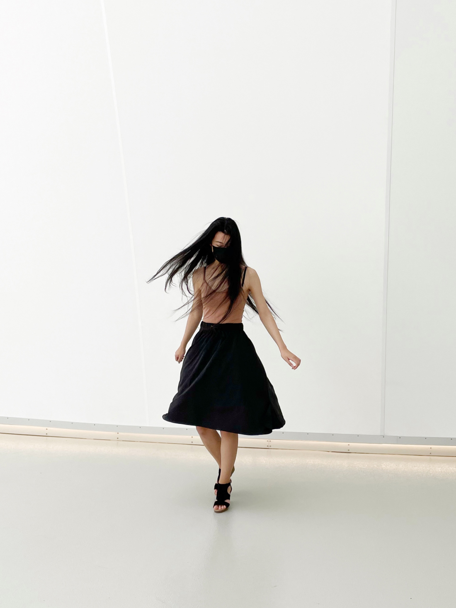

Nice to meet you!
Hi! 👋 I’m Vivian (she/her), a multidisciplinary UI/UX designer focusing on user experience and research. I'm a metric system activist and where I come from water freezes at 0°.
When I’m not working on my portfolio, I’ll probably be at a board game meet-up, browsing the web for inspiration, or relaxing at home watching Netflix.

Study.
2021-2022
UI/UX Design Certificate
California Institute of the Arts
I completed an online certificate program consisting of four project-based courses on learning practical knowledge used in the end-to-end UI/UX process. I created app interfaces, websites, and practiced user-centered low to high fidelity wireframes & prototypes.
2016-2021
BMath. Mathematics and Business Administration
University of Waterloo
How studying business has made me a better designer.
Despite the lack of the term "design", business and design go hand in hand especially in user experience research & design. I've completed several important courses that I would often refer to during my design process:
- Business strategy & opportunity validation
- Marketing, market research
- Behavioural, organizational psychology
- Statistical research & analysis
In my case studies I always start with a consideration of the strategy, positioning, and competitiveness in my design strategy.
Just as these lessons apply to good business practices, they also apply to designing experiences. I believe what separates a design that looks good on paper from one that can also perform in the real world is the ability to convert the experiences into customer value and opportunity.
Design.
My Design Philosophy
/01
Optimism and collaboration
Tackling each challenge with optimism, enthusiasm, and collaboration sets the foundation for creating the best solutions.
/02
Empathy for others
Understanding the needs of the users through empathy and research is always my first step in creating inclusive, user-centered designs.
/03
Challenging my own assumptions
By challenging my own ideas I find learning opportunities in my work. Mistakes and feedback can lead to new, creative design solutions.
Get in Touch.

Toronto, Canada
Designed by me with coffee and ♥. Under construction. © 2022